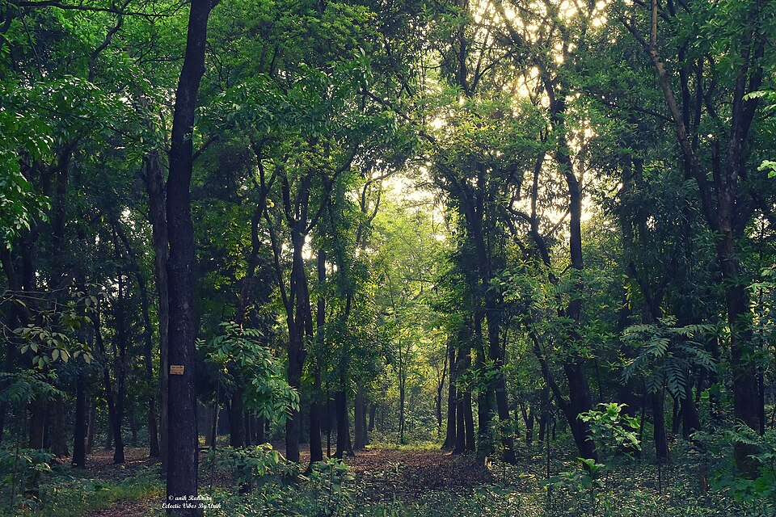

You and a couple of friends from your class, Art 74, decided to go camping to take a break from technology. As you begin to prepare your camping grounds, you were chosen to find firewood. Two long hours later, you head back to the camping grounds when suddently you notice that the campsite is no longer where it used to be. You have two choses:
(1) Look around for your classmates {Click here}
(2) Stay put {Click here}